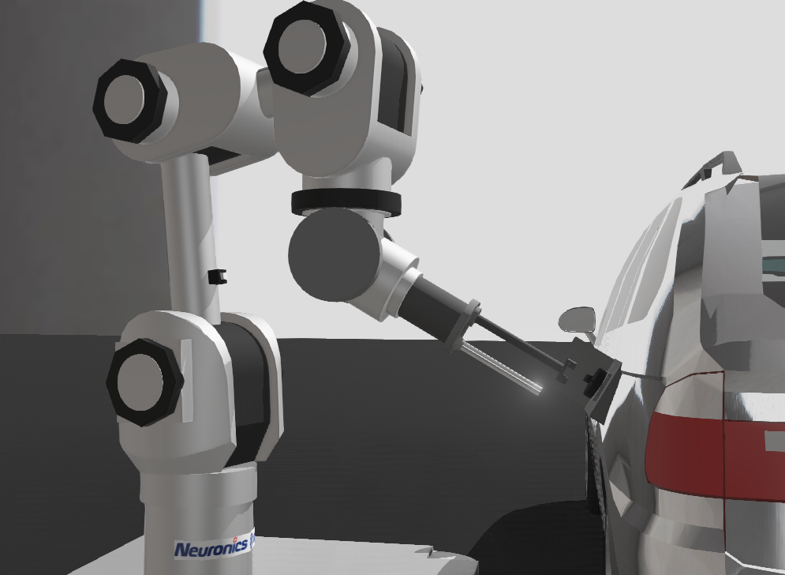
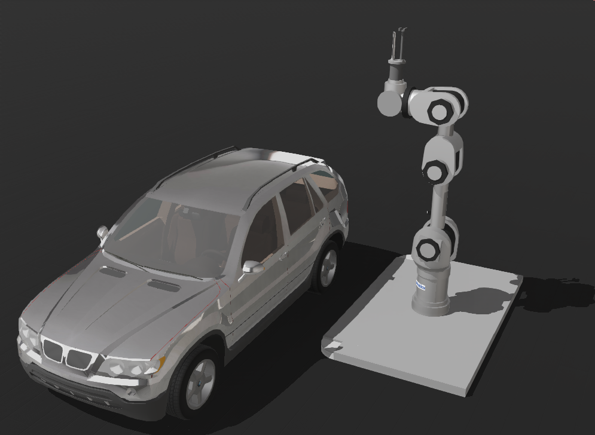
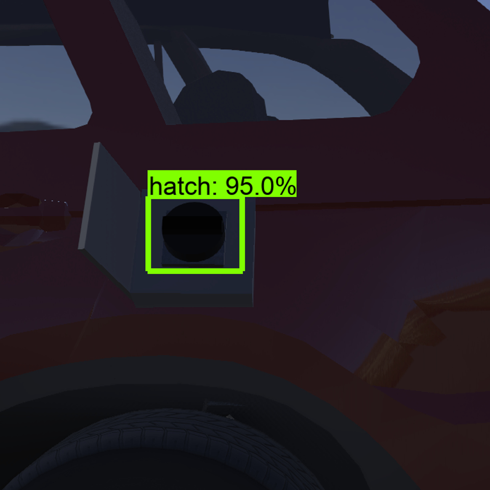

How does our System Work?
Hardware
Our robot works through the actuation of various rotary and linear motors, and use of laser and bumper
sensors for distance and tactile sensing, respectively. In order to get the robotic arm to move towards the fuel
cap, two types of inverse kinematic techniques are employed: numeric approach by use of the inverse Jacobian matrix
with proportional – derivative control on the first 3 rotary actuators to move the fourth joint into an approximate
but accurate offset from the target, and geometric approach by use of trigonometry to determine the exact angles and
offsets at which the rest of the rotary actuators and links should be set. Once these angles and offsets have
been determined, the robot moves the gripper towards the robot such that it is facing the fuel cap directly,
and ready to move towards it to begin unscrewing. The robot must also know about the rotation of the fuel cap
bar and the angle at which the fuel cap is tilted into the car so that it can move into the correct position
and orientation. Next, the robot moves the gripper into the fuel cap until a bumper sensor detects a collision
with the fuel cap, at which point it closes the gripper until another bumper sensor detects a collision with the fuel
cap bar. Now, the gripper can rotate to unscrew and bring the nozzle into position to begin fuelling the vehicle.
The reverse of these actions is carried out to bring the robot into its initial state. The pictures below show the robot
in action and at its resting position.


Software
1.App
Our system's Android app is designed to let users start the robot which will fuel their car at the gas station.
The layout of the app consists of 3 main pages: Main Page, Setting Page, Fuelling Page


Main Page Setting Page Fuelling Page

Functionality of Main Page

Functionality of Setting Page
Our app is created for Android phones, as they are more popular than iOS and Android is easier to work with. This meant we used Android Studio as our development tool as it is free and widely used. The app was coded in Java, as it is widely supported and is very suitable for Android development.
Some of the things we did to create our app included: using Figma to create our initial UI design, using SharedPreferences to store states of objects so they don’t change when switching pages, using Java’s Handler and Runnable classes to create the live fuel and price counter.
A major function of the app is the ability to have multiple users. The data for these users is stored on a database locally on the device as a CSV file. Once the databse was created and stored, methods for reading, writing and updating the files were created, which provide infrastructure for any future functionalities such as storing user data on server infrastructure instead of locally.
- When users open the App for the first time, they start on the setting page and need to create a new user to access the main page for further operations.
- Users input their personal information (with relevant error messages popping up if any input is invalid) and click on Add User button, a new user will be created.
- If users want to change information details of any created users, they can click on that specific user button first and then re-input new information, followed by clicking on the Update User button. The currently selected users information will be shown on account summary.
- Users click on Return button to access main page.
- Users click on one of Fuel Type buttons and select fuel amount using either “Full” checkbox or amount slider (depends on how much gas they want), then click on Start Fuelling button to start. A prompt window will pop up for them to confirm everything is ready.
- After users confirm fuelling, they stay on fuelling page and can see a dynamic 'live' fuel and price counter, much like one found on a real fuel pump. During this process, they can click on the Stop button at any time to stop fueling - although this should only occur during emergencies.
- When fueling is done, users are shown a success page confirming that fuelling has been completed and can then click on the Finish button to return main page. Optionally, they could select the checkbox to receive an email receipt.
- If users have any problems, they can click on Assistance button to ask for human help.
A video to introduce how to use our App
2.Vision
Our powerful vision algorithm can detect the fuel cap located in the open fuel hatch of a car. To create this algorithm, we first trained a pre-trained Tensorflow Object Detection API version 1 model on a variety of images to detect the open fuel hatch of the car and then retrieves us its bounding box coordinates. We then crop the image containing only the bounding box. Using this cropped image, we then \use an algorithm we built using the OpenCV library and hough ellipsis transformation, provided by the sci-kit image package, to recognize the fuel cap edges located in the cropped image. This returns us the coordinates of the centre of the fuel cap as well as angles at which the fuel cap is titled. The robot using the coordinates and angles, as well as by using its laser distance sensor to measure the distance between the car and robot, it can move towards the car, unscrew the fuel cap and fuel the car. The image on the left shows the robot recognizing the open fuel hatch, enclosed by the bounding box, with 100% accuracy using Tensorflow Object Detection API and he middle image shows the cropped image containing only the bounding box section. The picture on the right is detecting the fuel cap edges with OpenCV and hough ellipsis transformation.

How It All Fits Together
The RoboPump app and robot are integrated through a web server which they are both connected to. This allows them to exchange and react to a wide variety of messages such as: instructions for the amount of fuel, a fuelling successful message and an emergency stop fuelling message. In this way, the app can inform users about the operations of the robot, leading to a more comfortable experience where the user is aware of the processes being carried out. Additionally, the messages are sent using the TCP messaging protocol which is known for its reliability leading to the smoothest experience possible with the least dropped messages.